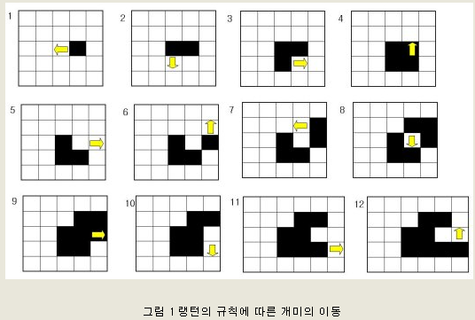
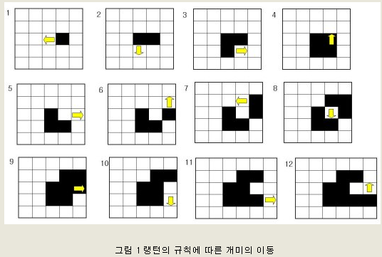
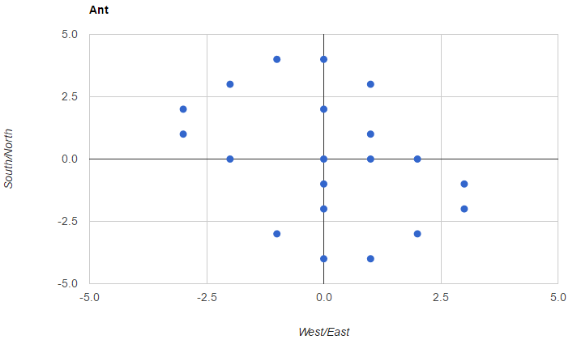
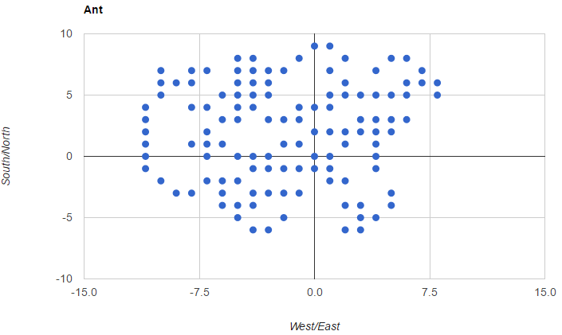
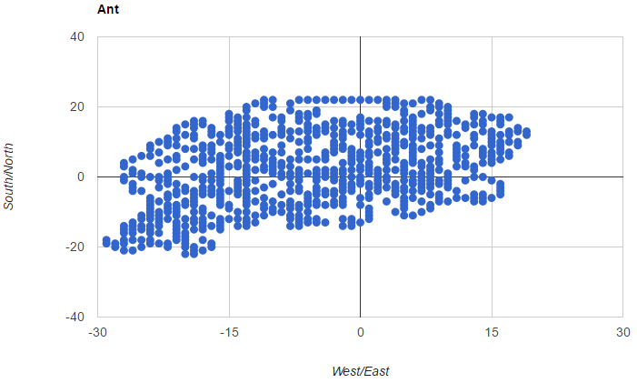
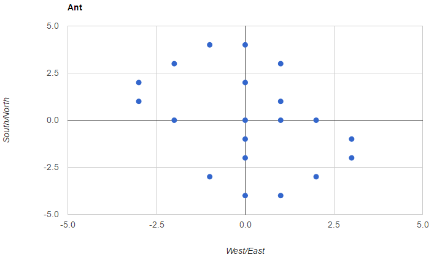
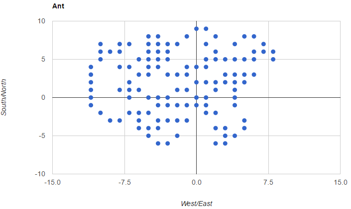
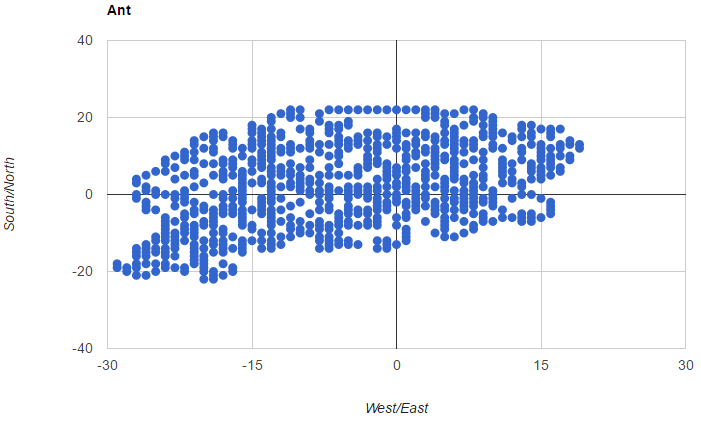

개미가 남동쪽으로 간 까닭은.
8/11/2016
스마트폰에 깔려있는 앱을 정리하다가 이걸 언제 작성했지 라고 스스로에게 되묻게 되는 Todo 리스트를 발견했다.
뭐 대단한 것이라도 있나 싶어 한 번 휙 둘러보았지만 대부분 이미 처리해 버렸거나 이젠 시간이 흘러 어떻게 해도 별 관계없는 것들이라 지워버리려던 순간 '랭턴의 개미 시뮬레이션' 이란 항목이 눈에 쑥 들어왔다. 그 순간 아, 그렇지 란 탄성과 함께 나중에 한 번 해 봐야지 라고 생각했던 랭턴의 개미 내용이 물론 약간의 검색을 동원해서 생생하게 다시 떠올랐다.
뭐 대단한 것이라도 있나 싶어 한 번 휙 둘러보았지만 대부분 이미 처리해 버렸거나 이젠 시간이 흘러 어떻게 해도 별 관계없는 것들이라 지워버리려던 순간 '랭턴의 개미 시뮬레이션' 이란 항목이 눈에 쑥 들어왔다. 그 순간 아, 그렇지 란 탄성과 함께 나중에 한 번 해 봐야지 라고 생각했던 랭턴의 개미 내용이 물론 약간의 검색을 동원해서 생생하게 다시 떠올랐다.
뭐냐 하면, 평면 상 격자를 개미가 한 번에 한 칸씩 움직이는데 아래와 같은 규칙을 통해 움직인다.
1. 각 격자는 희거나 검다.
2. 개미가 지나가면 격자의 색이 바뀐다.
3. 개미는 흰 격자 위에서는 왼쪽으로 90도, 검은 격자 위에서는 오른쪽으로 90도 방향을 바꾼다.
복잡해 보이지만 첫 몇 시행의 결과는 아래와 같다.

출처: 랭턴의 개미
1. 각 격자는 희거나 검다.
2. 개미가 지나가면 격자의 색이 바뀐다.
3. 개미는 흰 격자 위에서는 왼쪽으로 90도, 검은 격자 위에서는 오른쪽으로 90도 방향을 바꾼다.
복잡해 보이지만 첫 몇 시행의 결과는 아래와 같다.

출처: 랭턴의 개미
몇 번의 시행을 마치면 마치 짐승의 발자국이 눈 위에 남듯 개미의 발차취가 남게 된다. 점 색깔이 파란 색으로 보이는 것은 눈의 착각입니다.
100번 시행 후

1000번 시행 후

10000번 시행 후

100번 시행 후

1000번 시행 후

10000번 시행 후

이것만 가지고선 별 재미도 없고 감동도 없겠지만 이것의 웃기는 점은 이렇게 별다른 규칙을 찾을 수 없이 마치 랜덤하게 움직이는 것 처럼 보이던 개미가 일정 시행 이후에는 전문 용어로 어떤 N이 존재해서 n > N 인 모든 n에 대하여 좌표 평면의 우 하단으로 열을 지어 행진하는 듯 움직인다는 것이라고 한다.
그러면서 아직 증명되지는 않았으나 초기 상태가 어떻게 주어지든 - 다시말해 개미가 출발하기 전에 미리 검은 점을 어떻게 깔아놓든 간에 결국 개미는 우 하단으로 움직이는 것 처럼 보인다 는 말로 끝맺었던 것 같다.
그러면서 아직 증명되지는 않았으나 초기 상태가 어떻게 주어지든 - 다시말해 개미가 출발하기 전에 미리 검은 점을 어떻게 깔아놓든 간에 결국 개미는 우 하단으로 움직이는 것 처럼 보인다 는 말로 끝맺었던 것 같다.
직접 숫자를 바꿔가며 확인해 볼 수 있다. 초기값을 변경해도 동일한 현상이 발생하는지 확인하려면 ant.cgi 의 black_hash 에 검은 점을 추가해주면 된다. 갑자기 귀찮아졌다.